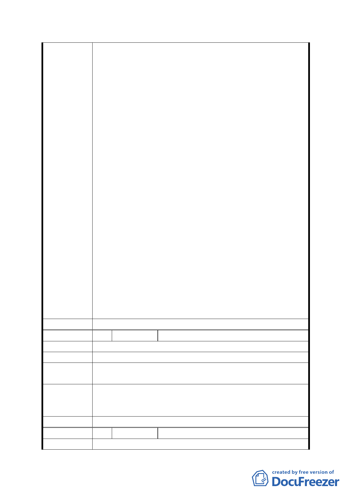

公所設置區民活動中心及綠化設施增加等因素，已將用地
面積調整為約 0.855 公頃，就調節上游 64 公頃之洪峰逕
流已屬足夠，因再大的面積仍無法完全改善下游福興路、
興德路易積水問題。
2.本防洪調節池位址屬於高地，不屬於易積淹水地區，然其
下游地區(興隆路與辛亥路口、興隆路與興德路口、興德
路、福興街等)皆屬易積淹水地段，經查近 10 年來發生積
水事件紀錄約 40 筆，其中屬於興隆路與辛亥路雨水下水
道系統內約 13 次，如興德路於 93 年曾積水 50cm、興隆
路與興德路口於 97 年曾積水 40cm、福興路積水 30cm
等。故於其上游設置滯洪池以節制部分逕流進入下游易積
水區域，屬於正確及有效治水方法。
3.本計畫區內現有軍營因國防部表示該軍事單位仍有使用
需求，且亟為重要無法釋出，建議將營區使用範圍區變更
為「機關用地」，鑑於國防軍事任務需求，故本案變更為
機關用地。另本案專案小組建議本府與國防部協商軍營縮
小營區、集約使用，或協調軍營搬遷整併可能性，嗣經本
府與國防部多次協商後，國防部表示現有軍營仍有戰備任
務需求、無法釋出，惟願意將營區北側界線往南退縮 30
公尺，釋出部分用地納入防洪調節池用地整體規劃，另臨
接辛亥路側基地退縮 5 公尺作為人行及開放空間，以配合
改善地區環境。
4.為紓解本地區積水問題、確保當地民眾生命財產安全，本
計畫案有其急迫性。惟未來隨著國防任務調整，國防部如
評估本計畫區內營區已無使用需求，本府將檢討營區之使
用，並納入地區通盤檢討或辦理個案變更。
委員會決議 同意依「市府修正後回應說明」辦理
編 號 8 陳情人 興昌里 24 鄰鄰長 高麗英
陳 情 理 由 不管你們做了什麼，請重視原有生態、自然、環保。謝謝!
建議辦法 無
第五次專案小組
審查結論
同編號 1
市府修正後
1.本變更案對於計畫區西側坡度陡峭之山坡地，基於生態維
護及水土保持，變更為保護區。
回 應 說 明 2.另防洪調節池用地設計亦要求兼顧「防洪」及「生態」。
委員會決議 同意依「市府修正後回應說明」辦理
編 號 9 陳情人 興昌里 23 鄰鄰長 姜曼莉
陳 情 理 由 這次討論重點：
- 22 -